206 × 181 × 97Outer envelope (Rev 0.7: 112 mm tall)
4 + 4 + 4M3 lid / M3 board / cooler tie-down screws
3 mmI/O plates; plugs now fully mate
376 gEnclosure set, sliced (Rev 0.7: 419 g)
+32 / +22Stackable 3.5 in / 2.5 in storage trays
Rev 0.9 progress
Status as of the last update. Every number below comes from a simulation or the slicer, not a physical test. Full report: simulation review.
- doneRelease 0.9.1, lid-screw holes fixed: on the printed Rev 0.9 lid the four roof ribs ran into the lid-screw counterbores, because the ribs were added after the holes were cut. The holes are now cut last. A new standard check,
cad-agent holes, now confirms every hole of every part is clear: 18 parts, with the RP-SMA D-holes listed as deliberate. Reprint the cover; the other parts are unchanged.
- doneRight cooler: the printed Rev 0.8 lid hit the fitted cooler. That cooler is the reComputer mini J501 heatsink (Seeed 100099421): a G48R tower with 5 × Ø6 heat pipes and 84 × 93 × 33 mm of fins on a 2 mm copper spreader (6.8 mm M3 standoffs), plus a 92 × 92 × 15 mm 9215 fan, 50.3 mm tall overall. It is modelled from the S05/S06 datasheets and the photos; the fan is centred on the module, with the cooler's ears on the module's mounting holes. See cooler section. The 34 mm WS-RDN-601 stays a supported alternative.
- doneLowest lid that fits: 97 mm overall (Rev 0.8: 92 mm, sized for the 34 mm cooler). A flush 3 mm grille sits 2.4 mm above the fan, open over the whole blade disc; the fan blows up and out through it, a skirt round the octagonal fan frame stiffens the cut-out, and star ribs with bosses stiffen the ring around it.
- doneLid strength (FEA, 300 N press): a six-variant sweep picked a 3.5 mm roof with 8 mm ribs. Roof deflection 0.65 mm (limit 1.19 mm), grille deflection 1.25 mm (limit 1.44 mm, so it stays 1 mm off the fan), 99.9th-percentile safety factor 2.11 (target ≥ 2).
- doneFilament: 375.7 g and 11.75 h for the enclosure set (Rev 0.8: 368 g; Rev 0.7: 419 g). The cover is 129.2 g (Rev 0.8: 121.2 g) for 5 mm more height and the grille.
- doneFinger safety: the grille openings are 10.6 mm wide; a 12 mm test finger sinks 3.2 mm into one and stops 2.3 mm short of the fan.
- doneAirflow (OpenFOAM), fan blowing up: with the G48R at 40 W in a 25 °C room, the fan draws room air in through the wall vents and hex cells, through the fins and out of the roof grille at 40.7 m³/h (24 CFM). Air reaches the fins at about 25.1 °C (an energy-balance estimate, within a few tenths of a kelvin of the room, so little or no re-breathing in open room air; Rev 0.8 with the 34 mm cooler: 7.1 K), the fins carry the 40 W at 33.9 °C, and the thermal plate hot spot is about 35.6 °C (limit 80 °C). Converged and steady: heat out within 0.5 % of heat in. See the side section and flow.
- doneRecovery riser for an already printed Rev 0.8 lid:
tools/lid_riser.py --rise 18 (M3 × 30 lid screws). It is a one-off, not part of the print set.
Rev 0.8 progress
Status as of the last update. Every number below comes from a simulation or the slicer, not a physical test. Full report: simulation review.
- doneLess filament: 368 g and 11.9 h for the enclosure set (base, cover, plates, hatch), down from 419 g and 13.1 h (Bambu Studio, P1S 0.20 mm Standard, PLA Basic). The cover alone is 121.6 g (was 164.4 g).
- doneStiffer lid: a parametric roof sweep (thickness × rib layout, FEA under a 300 N press) picked a 4.5 mm roof with star ribs; each rib lands on solid wall (no vent slot under its end). Deflection 0.72 mm (Rev 0.7: 1.19 mm), 99.9th-percentile safety factor 3.0 (target ≥ 2); the single-element peak is at a sharp rib-to-ring corner (local factor 1.1, mesh-dependent).
- doneFloor vents where topology optimisation (pyMOTO) found no load path: 61 hex vents. The base-mount FEA still gives a safety factor of 3.7.
- doneCooler corrected to the Seeed WS-RDN-601 datasheet (100 × 87 × 34 mm). Measure yours before printing the Rev 0.8 lid: it fits a cooler up to 34 mm tall above the thermal plate (the intake ring hangs 2 mm above it).
- doneAirflow (OpenFOAM): with the cooler at 40 W in a 25 °C room, the fan breathes 32.1 °C air (Rev 0.7: 37.6 °C), the fins carry the 40 W at 55.1 °C (Rev 0.7: 61.8 °C), and the thermal plate hot spot is about 57 °C (Rev 0.7: 64 °C; limit 80 °C). Converged: heat out within 1.4 % of heat in.
- openThe fan still re-breathes some exhaust: its air is 7.1 K above the room (target ≤ 3 K). Next: a taller intake ring or a separate exhaust path. The bare-module (no heatsink) baselines are still running; a tegrastats stress test on the real board settles the plate temperature.
- doneAntenna holes have a 6.0 mm flat that keys the RP-SMA thread's milled flat, so the connector cannot turn while you tighten the nut. P20 coupon prints the flat at 5.9–6.2 mm to pick the fit.
Rev 0.7 progress
Status as of the last update. This page is regenerated when the pipeline finishes; refresh to see new renders.
- doneRev 0.7 (from the first print): every port window is now derived from its mated plug on the measured mating axis, not from a receptacle bounding box that included pins below the PCB. DC IN now fits the 15 mm Phoenix MSTB 2,5/2-STF-5,08 screw-flange plug. RJ45 and audio windows are centred. Legends read "DC IN 12-36V" with − / + (inferred: verify with a meter), "1GbE" and "10GbE". Lid screw holes are opened to Ø3.6 and insert holes have a Ø4.05 seat for the insert tip. See port fit check.
- doneUnderside slots: stacked Mini PCIe (J13) over M.2 Key B (J11), and the M.2 Key E (J14) Wi-Fi card, modelled as keep-out envelopes. Stacked pair needs 10 of the 16 mm under the board and is 6–7 mm clear of the floor; the Wi-Fi card's touch on a support is now relieved.
- doneSATA confirmed on the underside (vertical J21/J24 data + JST PH 5 V power J22/J23, datasheet photo). The floor opens beneath them; P18 closes it when no storage is fitted.
- doneP1 is the base for storage stacks (and for desktop use); P17 adds the wall/robot tabs under a stack. See Which base?
- doneStorage trays: P15 (one thick 3.5 in HDD) and P16 (two 2.5 in drives), stacked as 1 total, 1 of each or 2 of each; P17 mount plate. New P19 clips hold skinny 7 mm SSDs that only have side holes. All seven checked configurations pass (see Storage).
- doneStacking redesigned so every standoff is turned while fully exposed: standoffs hang from the part above and the next set screws up through each tray's bottom ledge. Build upside down on the lid. Five stack combinations pass (no plastic or hardware overlap, open cable chimney).
- doneCooler tie-down screws thread into the female standoffs between the AGX module and the heatsink. M3 × 35 flat heads (M3 from the module holes). The countersink seat is raised to Z 9.76 inside each column, so a standard 35 mm screw gives exactly 8 threads (4 mm) above the AGX top (Z 40.76). Flush with the floor would need an uncommon 44.3 mm. The 0.5 mm thermal pad lifts the heatsink only.
- doneSchematic re-checked for SATA power: J22 / J23 are 5 V only (pin 4 SATA_5V); the board's 12 V rail feeds only the expansion connector. 3.5 in drives keep the tray 12V IN entry. Designators corrected: data J21 / J24, power J22 / J23.
- doneCable routing modelled end to end: plug bodies, minimum bend radii (12 mm SATA data, 6 mm PH, 8 mm 12 V), straight lead-ins and plastic clearance, all checked for every configuration (see Cable routing). Drive connector ends moved to X 48 / X 62 to make room.
- doneFull rebuild with all reinforcements: every check passes (cad-agent report: 43 pass / 0 fail). CAD only; nothing printed or test-fitted yet.
- doneOther snap risks reinforced: board posts and cooler columns get a 3 mm radius fillet at the floor and a 2 mm radius fillet between the pad landing and the fat column; storage-tray standoff sleeves are fused to the tray walls like the lid columns. Section
- doneLid-screw columns (P1, P1M and the lid) fused to the side walls: full-height buttress, 4 mm wall fillets, 3 mm radius fillet at the floor (base) and roof (lid). They were free-standing 10 × 68 mm columns touching the wall by 0.2 mm. Close-up
- doneCAD tooling moved to the
Valpatel/cad-agent repo as the cad-agent command (92 tests). This project runs on it through cad-agent.yaml; nothing lives in graphlings.
- doneReset / recovery pin holes moved to the real switches (STEP part SWITCH4-8X7X7MM, between the USB-C ports and the right-hand corner) and labelled REC and RST as you described. They had been placed over the wrong parts, found by size instead of by name.
- openMeasure: the heatsink standoff thread depth (needs ≥ 4.5 mm for 8 threads plus margin).
Review status and remaining measurements
CAD checks pass: one valid watertight solid per part, zero plastic overlaps, zero collisions with the 5176 carrier solids, 158 open shells, module, reference cooler and GMSL envelopes. It remains a fit-check prototype. Before printing, confirm the cooler screw thread and original length, GMSL XY placement, the J26 USB-A model, your cable overmolds and the filament. The nominal gap between the GMSL PCB and the cooler is only 1.58 mm in a 4.5 mm overlap strip.
Assembled · wall/robot base with GMSL
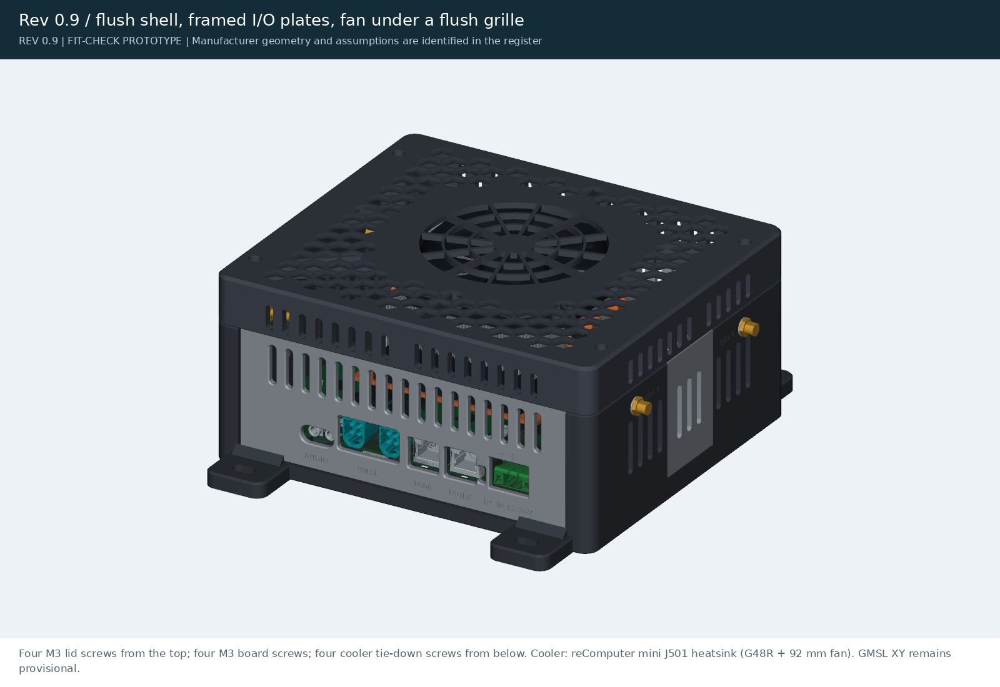
The lid sits flush on the base with a reveal line at the split. Four M3 screws from the top go into inserts in the wall columns, so the lid comes off with the base still bolted down. The lid's ledges and outer skin capture both I/O plates and the J17 door.
Cooler tie-down: the heavy part is held by the housing
A printed column (D14, D7 landing) sits under each of the four 92 × 79 cooler holes. A flat-head screw goes up from under the floor, through the column and PCB, and into the cooler. The 90° countersink keeps the head 0.43 mm below the floor, so the base still sits flat. Each M3 × 35 flat-head screw goes up a 7 mm pocket in the floor, seats on a countersink raised to Z 9.76 inside the column, and threads 8 threads (4 mm) into the female standoff between the AGX module and the heatsink. The length comes from the stack: the AGX top is at Z 40.76, plus 4 mm of thread. The 0.5 mm thermal pad lifts the heatsink, not the standoff thread. Print coupon P14 first.
Rear I/O
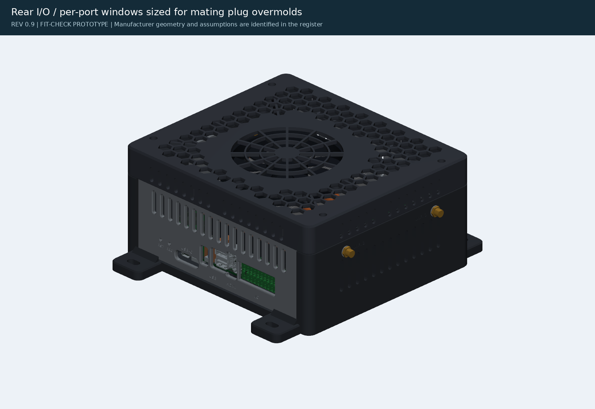
I/O terminal, HDMI, three USB-A and two USB-C. Windows for overmolded plugs are sized to typical overmolds, because those overmolds enter the plate.
Exploded · labels and hardware
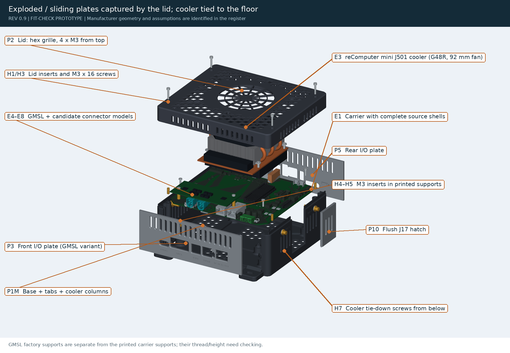
Plates and the hatch slide straight down; the lid captures them. The cooler tie-down screws are shown below the base.
Open inspection
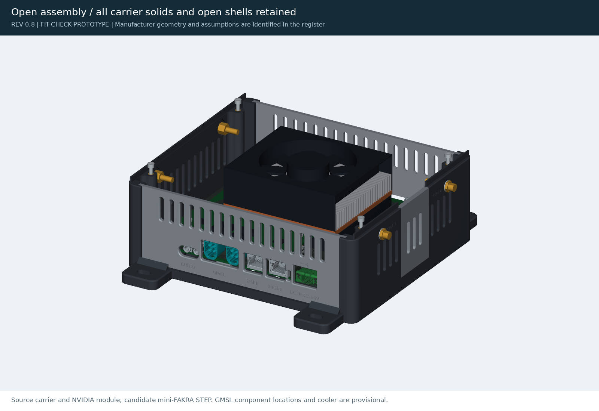
Every carrier solid and open shell is retained. The cooler and GMSL placement remain provisional.
Desktop · without GMSL
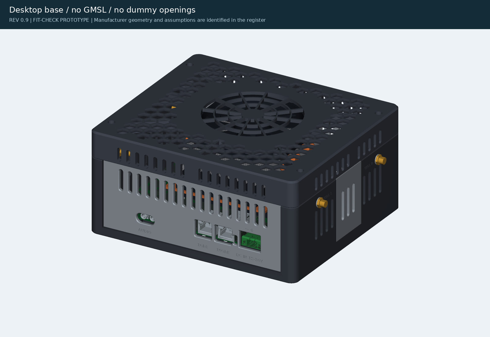
No dummy GMSL window. Nano-SIM service: remove the front plate.
Which base do I print?
| Setup | Print | Notes |
|---|
| Desktop, no storage | P1 + P18 cap | Rubber bumpers in the four foot pockets. |
| Wall / robot, no storage | P1M + P18 cap | Tabs and M6 slots are on the base itself. |
| Desktop with drives | P1 + P15 / P16 trays | Standoffs into P1's column-foot inserts; bumpers go in the bottom tray's foot pockets. |
| Wall / robot with drives | P1 + P15 / P16 trays + P17 plate | P17 carries the same tab and slot pattern as P1M, under the stack. P1M is not used with trays, because its tabs would sit mid-stack. |
P1 and P1M share the same stacking inserts and SATA drop opening (checked: no overlap with trays, standoffs or drives), so P1M can take trays too; it just isn't useful.
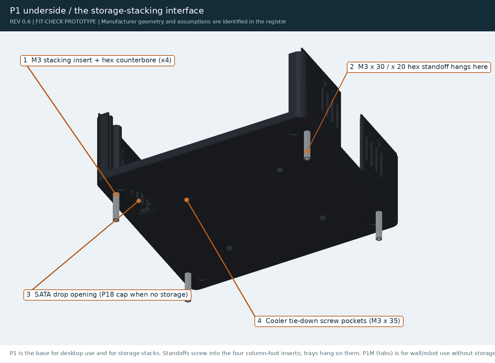
Storage expansion: 1 total, 1 of each, or 2 of each
Drive mounting options
| Drive | Tray | Fastening |
|---|
| Thick 3.5 in HDD (26.1 mm, SFF-8301) | P15, one per tray, 32 mm tall | 6-32 × 3/16 in pan heads from below; holes at all three SFF pairs (41.28 / 85.73 / 117.48 mm), counterbored so trays stack flat. Needs 12 V via the tray's 12V IN hole. |
| 2.5 in HDD/SSD up to 15 mm with bottom holes (SFF-8201) | P16, two per tray, 22 mm tall | M3 × 4 ISO 7380 button heads from below (1.7 mm into the drive; spec max 2.5). 5 V from the board's SATA power headers. |
| Skinny 7 mm SATA SSD, side holes only | P16 + four P19 clips per drive | M3 × 5 side screws (2.0 mm, the SFF max for 7 mm drives) and M3 × 6 floor screws into captive nuts. The clips use the same tray holes. |
Cable routing: carrier ↔ drives
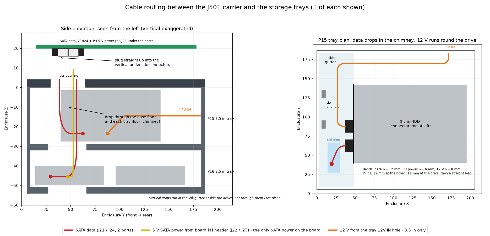
- At the carrier. SATA data J21 / J24 and SATA power J22 / J23 (JST PH 2.0, 5 V only) are vertical connectors on the underside of the board, at the front-left corner. Plug the leads in straight up before the board goes into the base. The plug bodies (12 mm data, 7 mm PH) stop just above the floor.
- Exit from the computer. The leads drop straight down through the opening in the base floor, directly under the connectors, so there is no bend at the board.
- Through the trays. Every tray floor has the same opening (the chimney), so leads for a lower tray pass straight through the upper one.
- Into the drive. In its own tray, each lead turns toward the drive in the left gutter, then runs straight into the drive-end plug. The drive connector ends sit at X 48 (3.5 in) and X 62 (2.5 in) to leave room for the bend plus the 11 mm plug and a straight lead.
- 12 V for 3.5 in drives does not come from the board. The carrier's SATA power headers J22 / J23 carry 5 V only: pin 1 NC, pins 2–3 GND, pin 4 SATA_5V, from Q59-switched VDD_5V_SYS with a 2 A bead per port (schematic sheet 27). Its only 12 V rail (VDD_12V) feeds the camera expansion connector (sheet 3). A 3.5 in HDD therefore takes 12 V through the tray's rear 12V IN hole, from one of:
- a Y-split of your DC input, outside the case, if your supply is 12 V;
- a 12–36 V to 12 V buck converter on the tray's tie anchors, if it is not;
- a separate 12 V supply.
Then use a 12 V-to-SATA power adapter with a built-in 5 V regulator. 2.5 in drives run from the board's 5 V headers with no extra supply.
- Wiring rule. Wire a 3.5 in drive from the front SATA connector and a 2.5 in drive from the rear one; from the rear connector the turn into a 3.5 in data plug only allows about a 9 mm bend.
Bend radius: there is no published SATA bend-radius standard (3M sells foldable SATA cable; the general rule is at least 15 cable thicknesses). The design therefore assumes at least 12 mm for SATA data, 6 mm for the PH power lead and 8 mm for 12 V. Every route below is modelled with those radii and checked against the plastic. Prefer slim round or foldable SATA cables, and never crease them.
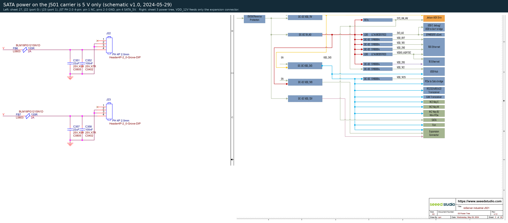
| Configuration | Route | Bend needed | Available |
|---|
Checked configurations
| Configuration | Height | Result |
|---|
Underside slots
The stacked Mini PCIe (J13) and M.2 Key B (J11) cards need up to 10 mm of the 16 mm under the board and sit 6–7 mm above the floor. The M.2 Key E Wi-Fi card (J14) is relieved with a 0.5 mm margin. storage-checks.json
Service buttons and antenna bulkheads
Reset / force-recovery: the two right-angle switches (SW1/SW2, Alps SKQJLBA010) sit on the rear edge between the USB-C ports and the right-hand corner. REC is the one nearest the USB/IO headers and RST the one nearest the far board edge, and each is labelled on the plate. Two Ø1.6 pin holes with 45° lead-ins line up with the actuators (enclosure X 157.9 and 167.5, Z 25.6). A guide sleeve on the inside stops 0.35 mm short of the PCB edge, so the plate still slides straight down. Use a SIM tool or a paper clip. Corrected 2026-10-25: an earlier revision put these holes over the wrong parts, at the left end of the rear edge.
Antennas: four RP-SMA bulkhead pigtails (WIFI 1/2 on the left wall, CELL 1/2 on the right) go through the fixed base walls at Z62, between the vents and the lid split. The lid, both plates and the J17 door still lift off with antennas fitted. Each Ø6.6 teardrop hole has a Ø12.5 inner spot face that thins the wall to 2.5 mm, so short bulkhead threads still leave room for the washer, nut and antenna.
Lid and mounting
106 open hexagonal cells (of 216 positions; the rest are blind or cut away for the fan grille), 10 mm across flats: a 12 mm test finger cannot reach the fan (Rev 0.4's 25 × 29 mm cells could). They are intakes: the fan draws room air in through them and the wall vents and blows it out through the grille. Inside, each cell has a 0.6 × 1.0 mm chamfer (11.2 mm across flats), which prints roof-down with no overhang. Tabs are 32 × 26 × 8 mm with 45° gussets. Their 16 mm washer and 20 mm driver envelopes are clear because nothing overhangs the tabs. The base-plus-tabs print is 206 × 233 mm, leaving 11.5 mm of P1S margin at each end.
Board retention and J17 access
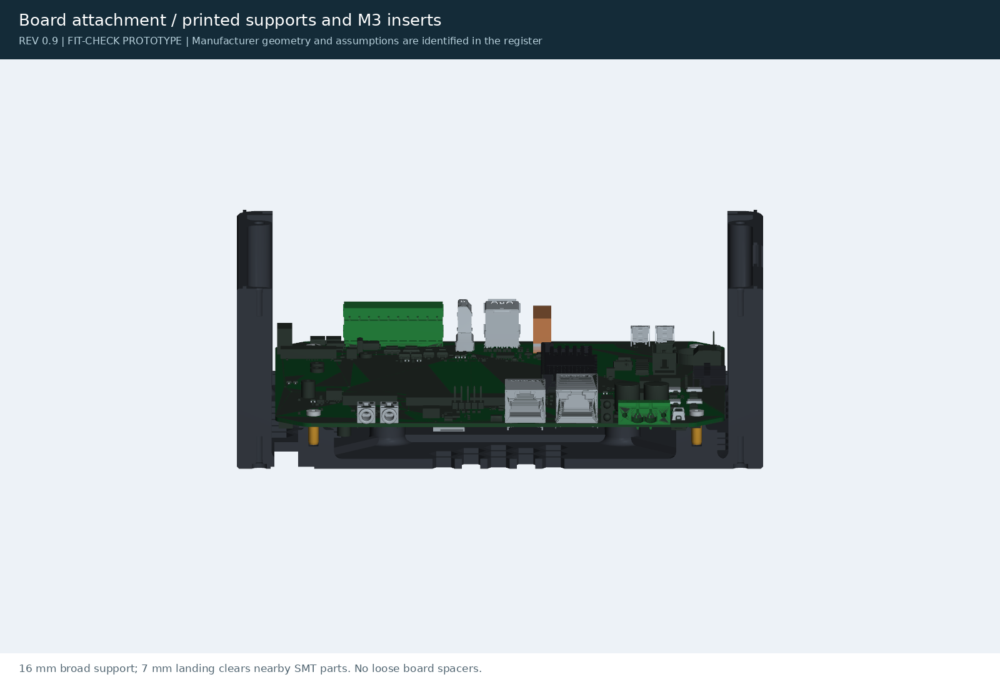
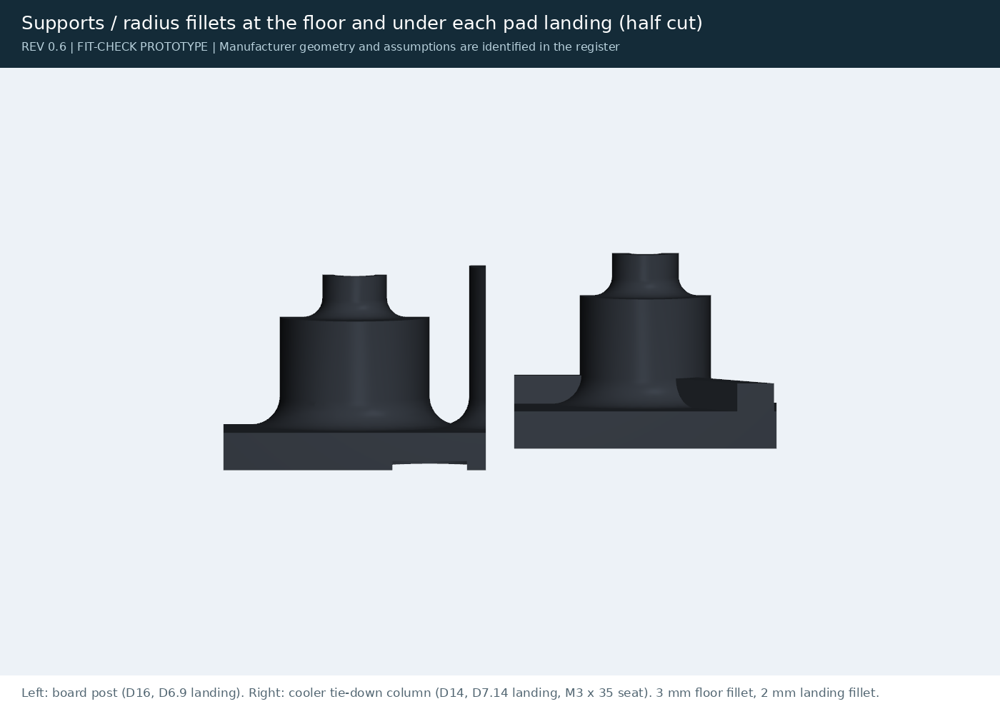
Broad 16 mm supports with 7 mm lands, clear of nearby underside parts. Four M3 inserts and button heads.
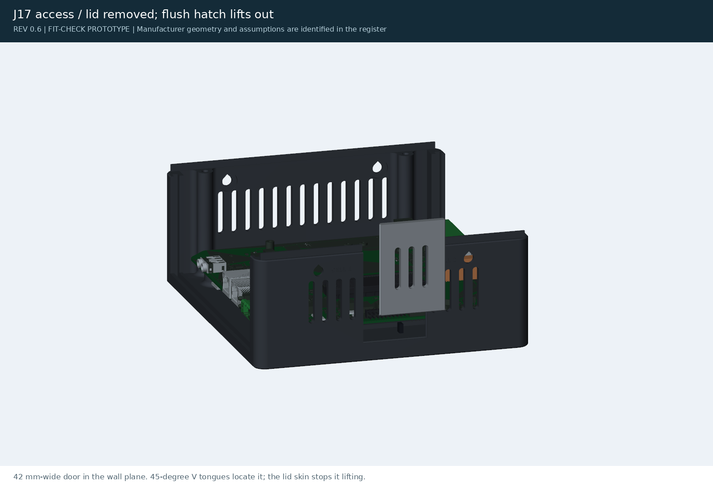
The J17 door fills a 42 mm notch in the right wall. 45° V-tongues locate it, and the lid skin keeps it from lifting.
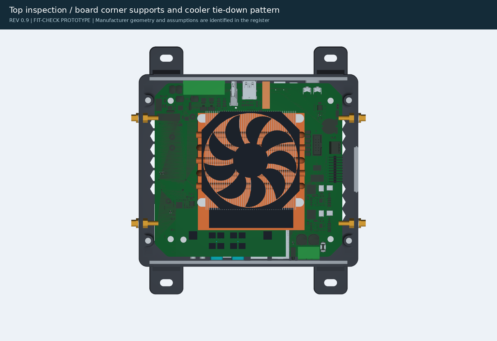
Board pattern 150 × 130; cooler tie-down pattern 92 × 79.
Each printed component
STL / 3MF download in print orientation. "Open in Bambu Studio" hands the 3MF to the installed slicer.
Off-the-shelf parts and electronics
The NVIDIA module and the candidate mini-FAKRA use downloaded STEP geometry. Fastener threads, cooler internals and the GMSL component positions are illustrative.
Individual carrier connector geometry
Extracted source bodies. The complete assembly additionally includes open shells.
Evidence, BOM and missing models
CAD, print files and validation
STLs and 3MFs are oriented on the bed (3MFs centred on a 256 mm plate); STEP parts use assembly coordinates. "Bambu Studio" links use the bambustudio://open handler and need this page served over http. Print coupons P11–P14 and template P9 first. Rev 0.4 is archived in archive/rev04/.
| ID / part | STL | 3MF | STEP | Slicer |
|---|
CAD checks do not certify physical fit, cable access, insert pullout, temperature, vibration, creep under the cooler clamp load or mounting load capacity.